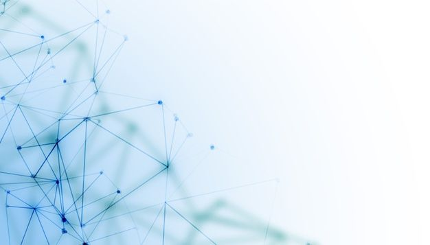

Completed AI in HealthcareSmart ECG Arrhythmia Detector
A deep learning model trained on the MIT-BIH dataset to classify cardiac arrhythmias from 12-lead ECG signals with over 97% accuracy, enabling real-time clinical decision support.

Areas named in the statement
The IEEE EMBS Student Chapter fosters a culture of hands-on research and interdisciplinary innovation. Our members engineer solutions at the intersection of biomedical science and technology — spanning AI-powered diagnostics, medical device development, wearable healthcare systems, embedded biosensors, and advanced signal processing. Every project reflects our commitment to publishing impactful research and building the next generation of healthcare technology.
Published by the chapter's project teams. The first is set out as a case study; the rest follow as spec sheets.

Completed AI in HealthcareA deep learning model trained on the MIT-BIH dataset to classify cardiac arrhythmias from 12-lead ECG signals with over 97% accuracy, enabling real-time clinical decision support.
An affordable 3D-printed prosthetic arm controlled via surface EMG signals, designed to provide functional grip patterns for upper-limb amputees in low-resource clinical settings.
Published
Medical Imaging
A U-Net based convolutional neural network for automated segmentation of glioma regions in multi-modal MRI scans, achieving a Dice coefficient of 0.91 on the BraTS benchmark dataset.
 Ongoing
Wearables & IoT
Ongoing
Wearables & IoT
A wrist-worn IoT device that continuously measures galvanic skin response, heart rate variability, and skin temperature to detect physiological stress levels and push alerts via a mobile app.
 Completed
Signal Processing
Completed
Signal Processing
A multi-class SVM and LSTM hybrid pipeline for classifying EEG, EMG, and EOG signals, enabling accurate identification of neurological conditions from raw physiological time-series data.
A near-infrared spectroscopy based system for non-invasive blood glucose estimation, combining photoplethysmography signals with a regression model trained on clinical patient data.
The fields in the statement meet along one path: a signal that starts in the body, is captured by instruments and becomes information through computation.
The body produces the signals that biomedical engineering works with.
Sensors and devices capture those signals and turn them into data.
Processing and models turn the data into information a person can act on.
Conceptual illustration — not a diagram of a specific project.
Each listed project, counted by the status its team has recorded.
Have an idea for a project, or want to join a team? Get in touch with the chapter.